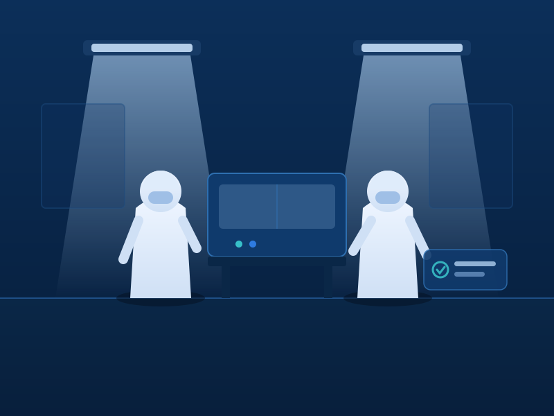
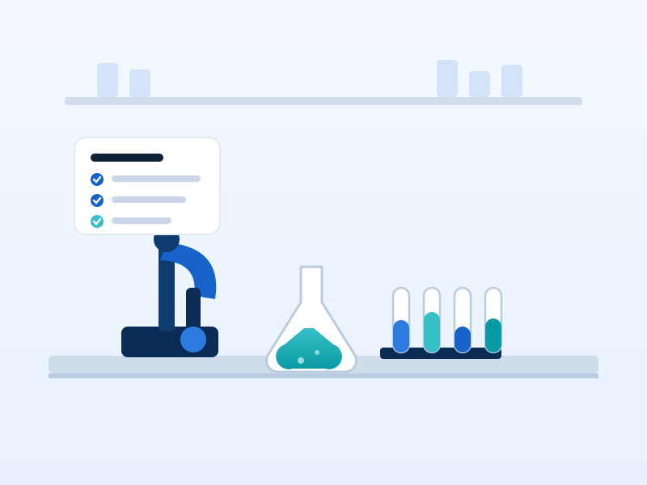

Tek Kullanımlık Tıbbi Malzeme ve Stent Teknolojilerinde Güvenilir Üretici
Balton, uzun ve güçlü bir üretim tecrübesiyle anestezi, kardiyoloji, diyaliz, jinekoloji, cerrahi ve üroloji alanlarında tek kullanımlık tıbbi çözümler geliştirir.

Klinik ihtiyaçlara odaklanan köklü bir üretim anlayışı
Balton, 1992 yılında kurulan ve uzun, güçlü bir tecrübeye sahip olan; anestezi, diyaliz, genel cerrahi, kadın doğum, kardiyoloji, radyoloji, gastroenteroloji, üroloji ve fleboloji alanları için tek kullanımlık tıbbi malzeme üreticisidir.
Şirketimiz koroner ve periferik stentlerin yanı sıra kendinden genişleyen stentlerin üretiminde uzmanlaşmıştır ve 1995 yılından itibaren Türkiye’de faaliyet göstermektedir.
Kurumsal profilimiz
Sekiz klinik alanda uzman ürünler
Her ürün grubu, ilgili branşın klinik ihtiyaçlarına göre geliştirilmiş tek kullanımlık tıbbi malzeme ve cihaz portföyünü kapsar.
Tecrübe, uzmanlık ve uluslararası güven
1992’den beri üretim
Uzun yıllara dayanan üretim tecrübesi ve sürekliliği.
1995’ten beri Türkiye’de
Yerel pazarda köklü ve kesintisiz faaliyet.
90+ ülkeye ihracat
Benzersiz ürünlerimiz dünya genelinde kullanılmaktadır.
Stent teknolojilerinde uzmanlık
Koroner, periferik ve kendinden genişleyen stentler.
Uluslararası iş birlikleri
Üniversiteler ve tıp merkezleriyle ortak çalışmalar.
Güncel teknoloji ve hammadde
Üretimde dünyada kullanılan güncel teknoloji ve malzemeler.
Ürün ve iş birliği talepleriniz için bize ulaşın
Uzman ekibimiz, klinik ihtiyaçlarınıza uygun ürün ve katalog bilgileri için sizinle iletişime geçmekten memnuniyet duyar.